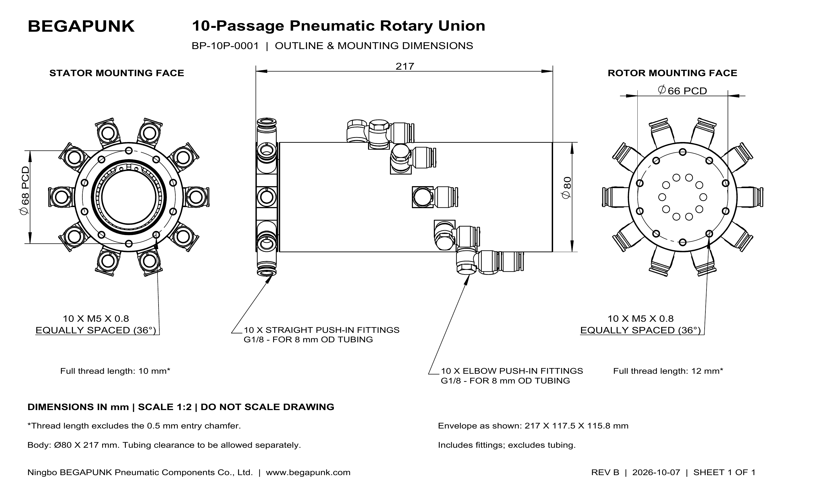

BP-10P-0001 10-Passage Pneumatic Rotary Union
- Passages / MOQ
- 10 passages · 1 piece
- Bulk price
- Request a quantity-based quote
- Production lead time
- About 20 calendar days after payment
- Warranty
- 1 year from shipment
- Delivery
- Shipping quoted by destination
- Quality / testing
- Inspection requirements on request
Fixed supply. Rotating outlets.
Ten independent air circuits.
BP-10P-0001 is a 10-passage pneumatic rotary union for transferring ten independent compressed-air circuits between fixed piping and rotating equipment. It has a maximum pressure of 1 MPa and a maximum speed of 100 RPM for intermittent rotation, with 20 G1/8 ports and included fittings for 8 mm OD tubing. The 6061 aluminum alloy body uses O-ring seals and has no through bore.
The animation illustrates compressed-air transfer while the outlet side rotates, stops and starts. Use separate passages for clamp, release, blow-off or other pneumatic functions required by your machine.
The air circuits remain separate; the rotary union transfers air and does not replace your control valves.
22-second principle animation with English narration. The illustrative fixture is not an installation drawing; use the downloadable outline for the current mounting pattern.
Check dimensions and mounting →BP-10P-0001 Specifications
| Model number | BP-10P-0001 |
|---|---|
| Independent passages | 10 |
| Suitable medium | Compressed air |
| Maximum pressure | 1 MPa (10 bar ≈ 145 psi) |
| Maximum speed | 100 RPM — intermittent rotation |
| Temperature range | 0–80 °C |
| Body material | 6061 aluminum alloy |
| Seal type | O-ring |
| Media ports | 20 × G1/8: 10 inlet + 10 outlet |
| Included fittings | 10 straight + 10 elbow push-in fittings for 8 mm OD tubing |
| Through bore | None |
| Body dimensions | Ø80 × 217 mm |
| As-shown envelope with fittings | 217 × 117.5 × 115.8 mm; excludes tubing |
| Rotor mounting | 10 × M5 × 0.8 on Ø66 mm PCD; 12 mm full thread depth |
| Stator mounting | 10 × M5 × 0.8 on Ø68 mm PCD; 10 mm full thread depth |
| Approximate net weight | 3.4 kg including fittings |
| Minimum order | 1 piece |
Mounting thread depths exclude the 0.5 mm entry chamfer. The as-shown envelope excludes tubing and is not the required rotational or service clearance. Weight is an estimate, not a measured shipping weight.
Where Ten Air Passages Can Help
Start with the pneumatic functions on the rotating side, then allocate one independent passage to each required circuit.
Dimensions, Ports and Mounting
The body measures Ø80 × 217 mm with no through bore. Both ends have ten M5 × 0.8 mounting holes at 36° spacing: rotor PCD Ø66 mm with 12 mm full thread depth; stator PCD Ø68 mm with 10 mm full thread depth.

Open the PDF for full-size dimensions and mounting details.
Check the fit
Use the STEP model to check the external envelope. Allow space for the 8 mm tubing, rotating fittings and maintenance access.
Align and support
Isolate and depressurize the machine before assembly. Align the fixed and rotating interfaces; support hoses so they do not apply bending or twisting loads to the union.
Connect and commission
Map and identify all ten circuits. Start at low pressure and speed, checking each connection and circuit before increasing to the intended intermittent operating cycle.
Download BP-10P-0001 Engineering Files
Outline Drawing (PDF)
145 KB · Rev. B · Dimensions, ports and the current ten-hole mounting pattern at each end.
3D Model (STEP AP214)
6.6 MB · Simplified external geometry with included fittings for assembly fit checks. Internal flow passages are omitted.
General Installation Manual (PDF)
Handling, alignment, connection and commissioning guidance.
BP-10P-0001 Questions
What does a 10-passage pneumatic rotary union do?
It delivers compressed air from stationary supply lines to rotating equipment through ten independent passages. These passages keep separate pneumatic circuits connected while the equipment rotates.
Are the air fittings included?
Yes. This configuration includes ten straight and ten elbow push-in fittings with G1/8 threads for 8 mm outside-diameter tubing.
Can BP-10P-0001 run continuously at 100 RPM?
The published speed limit is 100 RPM for intermittent rotation. For continuous operation, send the speed, pressure and duty cycle for application review.
Can I use it for hydraulic oil or vacuum?
The catalog configuration is for compressed air. For hydraulic oil, water or vacuum, send your operating conditions so we can recommend a suitable configuration.
How do I request a quote or check the fit?
Download the outline PDF and simplified STEP model, then send your required quantity and any available pressure, speed, passage functions and installation drawing. The model number alone is enough to start.
Ten circuits. Your machine. Let’s check the fit.
Send your required quantity and the operating details you have: medium, passage functions, pressure, rotation speed and mounting space. Add a drawing if available; the model number is enough to start.
Request a BP-10P-0001 Quote →